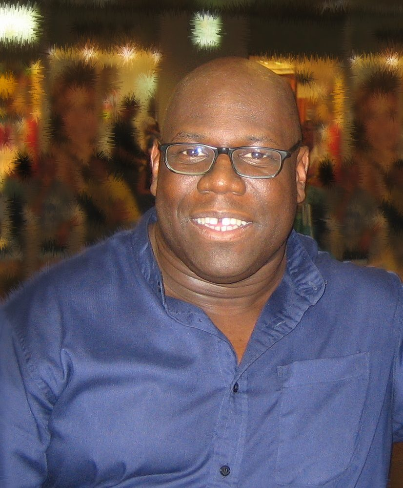

Carl Cox knuckled down in Melbourne studio wrapping up new album



We’ll be enjoying his unbeatable presence at some of our biggest events and festivals over the New Year period, including Shore Thing in Sydney, Summadayze in Melbourne and heaps more; but for the moment, Carl Cox says he’s got his head down in the studio putting the finishing touches on his new artist album in time for release next year.
“I’m in the recording studio with Josh Abrahams at the moment, finishing off my new album,” Carl told ITM on the phone in a recent interview. “It’s been taking a while since I started, but it’s reaching its defining crescendo and I’m really looking forward to finishing it off.” And he says the vibe here will be ‘dancefloor’, from the opening track right up until the very end. “The music that I’m making is the music that I’m playing,” he laughs.
It’ll be a conscious change in direction from his last three artist albums, which saw him pursue a more ‘home listening’ kind of vibe. “I thought to myself, you know what, I did that on the last record. What I haven’t done is make an album full of dancefloor records. So every track is just gonna kick it. The album is already called Every Road Leads to the Dancefloor, but for me I’ve never done this before, where every record is like, ‘Yep, that’s gonna work. Yep, that’s gonna work.’
“It’s exciting for me that I’ve been able to put in so much energy, based on what I’m doing right now… I don’t care about radio, I care about the dancefloor. Because that’s where my career has been, it’s there, and it has always been there. If the record doesn’t kick it, then it doesn’t go on the album.”
The decision to partner up with Aussie uber-producer Josh Abrahams has also had a big influence on how it’s going to turn out. “Most of the album has been done with him,” says Carl. “He’s had some massive success over many years, and I always knew he was a formidable talent anyway, so it’s a massive Boys Appreciation Club,” he laughed. “But it’s not about what we did ‘then’, it’s about what we’re up to ‘now’. He’s pushed himself way forward, and so have I.”
Stay tuned for ITM’s full-length interview with Carl Cox! And catch the big man at the following shows over New Years:
Thursday December 31st – Shore Thing, Sydney
Friday January 1st –Summadayze, Melbourne
Friday January 1st –Summadayze, Adelaide
Sunday January 3rd – Summadayze, Perth
Saturday January 9th – Summafieldayze, Gold Coast